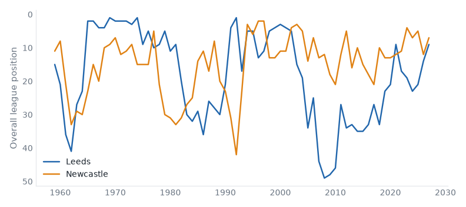

1 fixtures across 1 divisions, week of 14 September 2026.
Leeds host Newcastle in the Premier League on Monday 14 September. Leeds United live between the Premier League and the Championship; they sit 9th with 5 points from 3 games, form DDW. Newcastle United belong in the Premier League — 77% of their 69 recorded seasons; they sit 7th with 5 points from 3 games, form DWD. They have met 74 times in league play since 1958/59: Leeds United 26 wins, Newcastle United 29, 19 drawn.

|
|
Generated from football-data.co.uk results, Tiers 1–5, 1993/94–present.